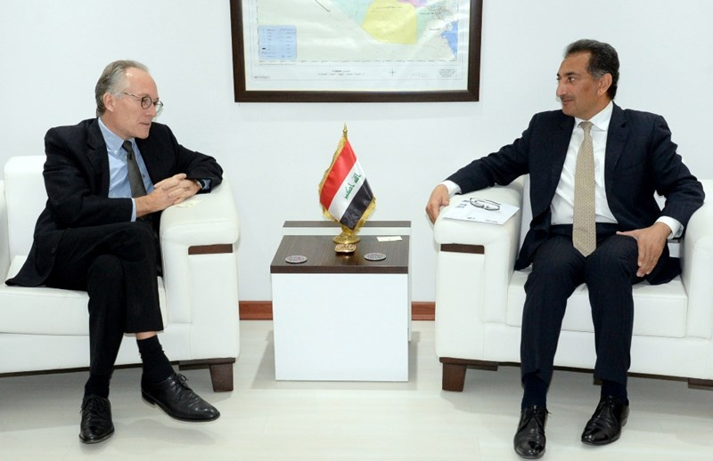
Undersecretary Meets Danish Ambassador in Baghdad
Undersecretary for Bilateral Relations, Mr. Nazar al Khairullah met on January 13, 2015 Denmark's Ambassador in Baghdad, Mr. Gert Meinecke in the presence of Mr. Asif Amin Head of the International Law Department at the Danish Foreign Ministry. >>>Read More

|
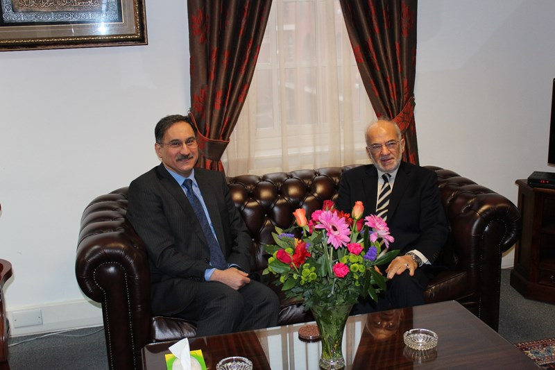
Foreign Minister Visits Consulate General in Manchester
Foreign Minister, Dr. Ibrahim Al Jaafari, visited on January 9, 2015 the Iraqi Consulate General in Manchester and met with Ambassador Zaid Izzuddine, Consul General, and the staff of the Consulate General. >>>Read More
|
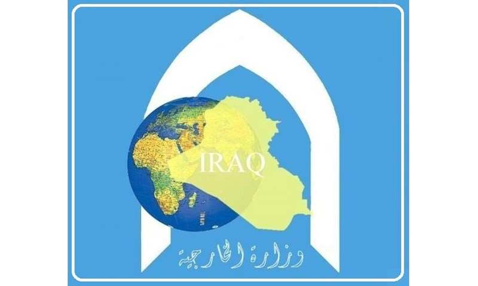
Statement
At a time when the Iraqi Foreign Ministry condemns what happened in France when the terrorists committed the crime of killing a group of French citizens, we urge the international community and civil institutions to stand by France >>>Read More
|
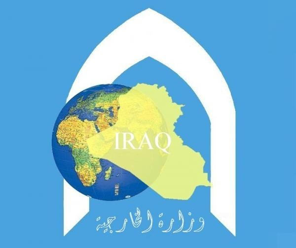
Statement on the Terrorist Attack on the Iraqi-Saudi Borders
At the time the Iraqi � Saudi relations are witnessing escalating coordination, a terrorist group attacked on January 5, 2014 a Saudi Arabian borders patrol in Sweef Station, Ar'ar Area, on the northern Saudi borders by firing arms against the station personnel. >>>Read More
|
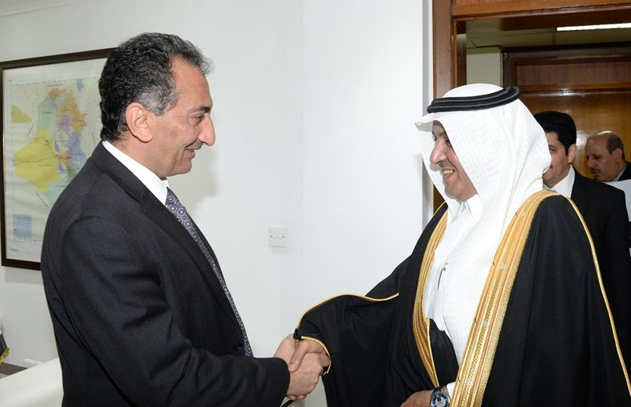
Undersecretary Meets Saudi Delegation
Undersecretary for Bilateral Relations, Nazar Al Khairullah, met on January 4, 2014 a delegation from the Kingdom of Saudi Arabia headed by, Abdul Rahman Al Shahri, Deputy Head of the Media Department at the Saudi Foreign Ministry. >>>Read More
|
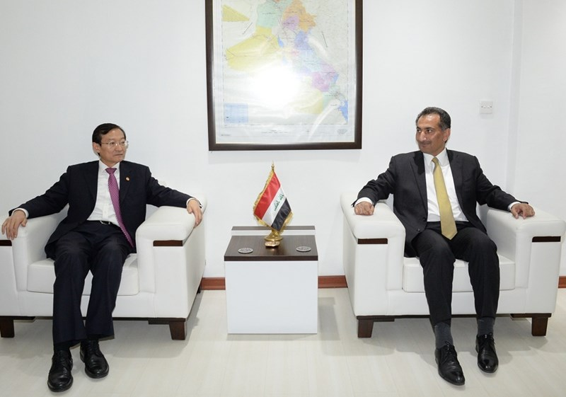
Undersecretary Meets His Chinese Counterpart
Mr. Nazar al Khairullah , Undersecretary for Bilateral Relations, received on 29.12.2014 his Chinese counterpart, Mr. Zhang Ming. >>>Read More
|
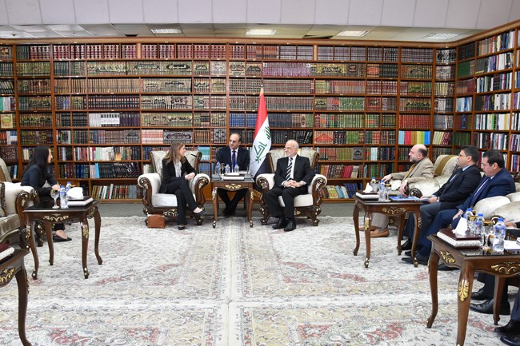
Foreign Minister Receives British Deputy Ambassador in Baghdad
Foreign Minister, Dr. Ibrahim al-Jaafari, received in his office in Baghdad, on 28/12/2014 British Deputy Ambassador Ms. Belinda Lewis. >>>Read More
|
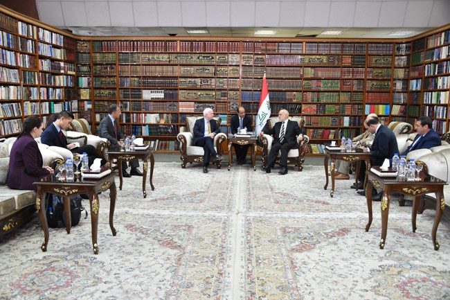
Foreign Minister Receives US Senator
Foreign Minister Dr. Ibrahim al-Jaafari, received on 27 December , 2014 John McCain, US Senator, and the accompanying delegation >>>Read More
|
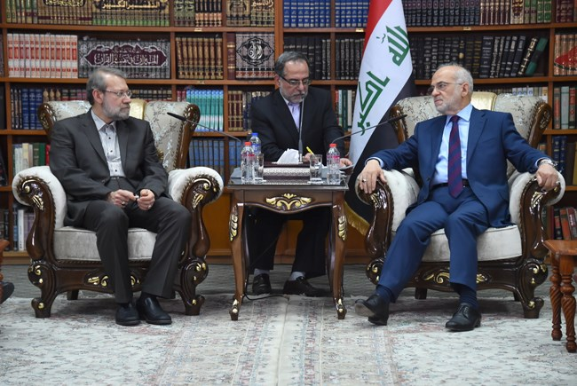
Foreign Minister Receives Head of the Iranian Shura Council and his Accompanying Delegation
Dr. Ibrahim al-Jaafari, the Iraqi Foreign Minister, received in his office in Baghdad late Wednesday, 12.24.2014, the head of the Iranian Shura Council, Ali Larijani, and his accompanying delegation. >>>Read More
|
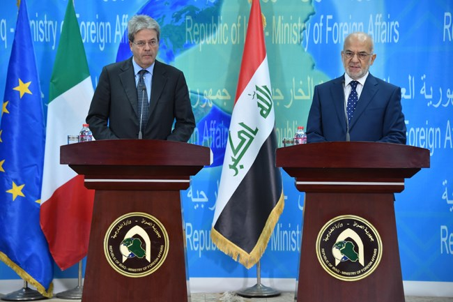
Foreign Minister Receives his Italian Counterpart
Foreign Minister Dr. Ibrahim al-Jaafari, received on 23 December 2014, the Italian Foreign Minister Mr. Paulo Jantelaun. >>>Read More
|
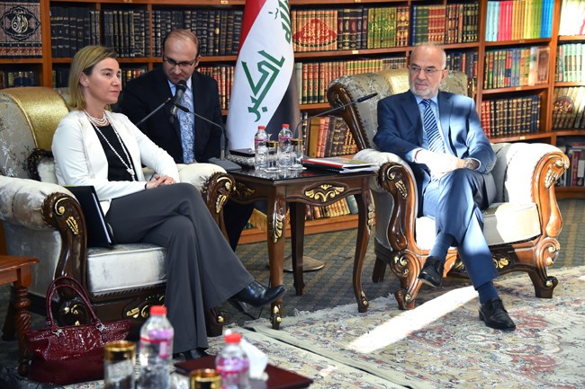
Foreign Minister Receives Representative of Foreign and Security Policy of the European Union, and Foreign Minister of the Netherlands
Foreign Minister, Dr. Ibrahim al-Jaafari, received in his office in Baghdad on 12/22/2014 the representative of foreign and security policy of the European Union >>>Read More
|
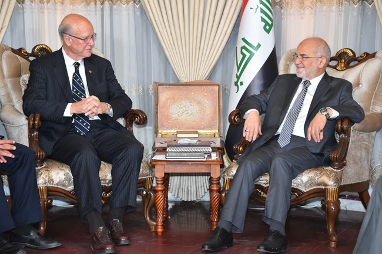
Foreign Minister Receives US Senator
Foreign Minister, Dr. Ibrahim Al Jaafari, received on 20 December 2014 Chairman of the Financial Committee at the US Congress, Senator Pat Roberts, and the delegation accompanying him. >>>Read More
|
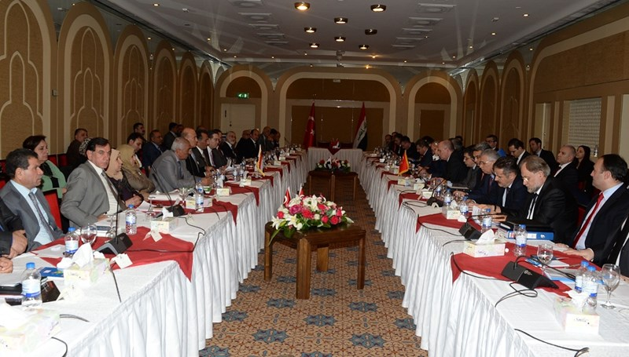
Iraqi-Turkish Preparatory Meeting for the Coming PM Visit to Turkey
Within the framework of the due visit of the Prime Minister, Dr. Haidar Al Ibadi, to Turkey on 25 to 26 of January 2014 upon an invitation from the Turkish Prime Minister >>>Read More
|
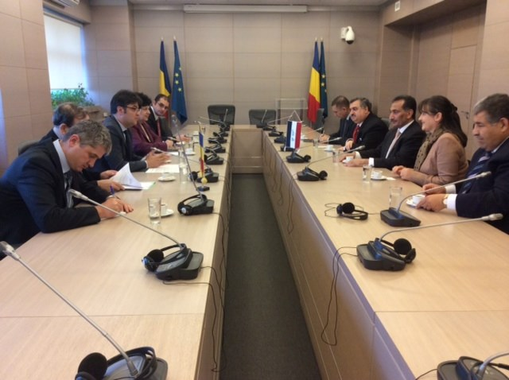
Undersecretary Concludes Visit to Romania
Undersecretary for Bilateral Relations, Nizar Al Khairullah, concluded an official 2-days visit to Romania >>>Read More
|
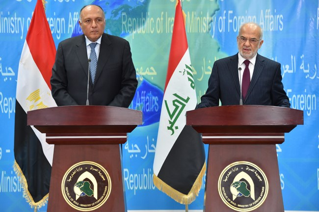
Foreign Minister Receives His Egyptian Counterpart
Foreign Minister Dr. Ibrahim al-Jaafari met on 17,December2014, the Egyptian Foreign Minister Mr. Sameh Shoukri and his accompanying delegation, and discussed with him progress of the bilateral relations and ways of strengthening them. >>>Read More
|